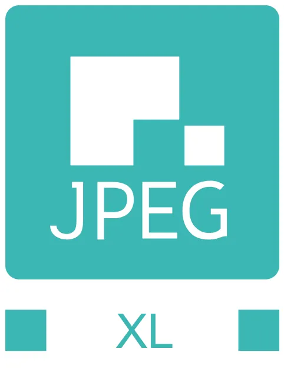
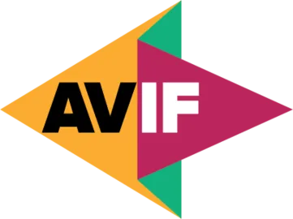

Historia de WebP
- En 2010 Google anuncia WebP.
- Fue desarrollado por Google y On2 Technologies, como un formato de codigo abierto, libre de regalias.
- Se lanzo como un formato de compresión con perdida o "lossy", y se diseño producir imagenes mas pequeñas que JPEG en calidades de imagen comparables.
- Se baso en la tecnologia de video VP8, especificamente en la forma en la que esta comprimia cada cuadro de video.
- En 2011 Google añadio una nueva funcionalidad a WebP, que permitió, entre otras cosas, el soporte de animaciones, permitiendo que el archivo WebP reemplace tambien al formato GIF.
- En 2012, Google anuncio un nuevo modo de compresion de WebP llamado WebP sin perdida o "lossless". Tambien anuncio el soporte de transparencias en ambos modos.
- En 2016, Apple agrego WebP a las versiones de iOS y macOS beta, pero luego lo quito en las versiones GM de iOS y macOS lanzadas en septiembre de 2016. No fue hasta septiembre de 2020, que WebP se agrego a Safari en la version 14.
- En 2018, el proyecto salío finalmente de su fase beta y se lanzo oficialmente.
- Para 2024 el 97% del mercado esta ocupado por navegadores web que soportan WebP. En se mismo año seformalizo el estandar bajo el indice RFC 9649.
WebP2 y el futuro del formato
Con el evidente surgimiento de nuevos formatos de imagen cuyas prestaciones rivalizan con WebP, se ha abierto la posibilidad de desarrollar una nueva version de WebP. WebP2 comenzo a ser desarrollado en 2021 con el fin de combatir el surgimiento de los formatos AVIF y JPEGXL, pero su equipo cambio de enfoque en 2022, apuntando a desarrollar una nueva técnica de compresion más eficiente antes de enfocarse en el formato propiamente.

